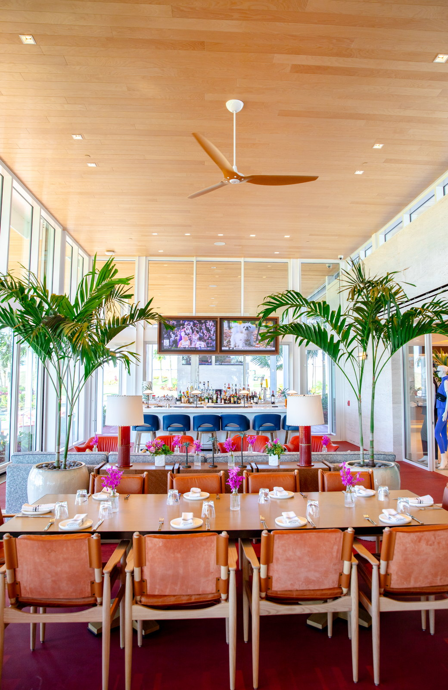

Do commercial windows block UV rays? The short answer is that ordinary annealed glass stops most UVB but lets UVA pass through, while modern commercial systems - laminated impact glass, low-E coated insulated units, and spectrally selective tints - block 95-99% of the full UV spectrum. For Florida commercial buildings, that distinction shows up in employee health, HVAC load, retail merchandise fade, artwork preservation, and tenant retention. This guide explains what UV actually does to commercial interiors, which glass assemblies block it, and how to specify the right package under FBC 8th Edition (2023) for a Florida commercial project.

What UV Rays Actually Do to a Commercial Interior
Solar radiation reaching the Earth's surface is split between three bands relevant to glazing: UVC (filtered by the atmosphere, not a glazing concern), UVB (290-320 nm, responsible for sunburn and most material degradation), and UVA (320-400 nm, the longer wavelength that causes deep fading and penetrates further into interiors). Florida sits at a latitude with one of the highest annual UV indices in the continental United States, and the commercial impact of that UV load stacks up across several ledger lines.
Fabric, Finish, and Merchandise Fade
UV radiation breaks down dyes, pigments, and polymers. On a Florida retail floor with south- or west-facing glazing, unprotected merchandise near the window line visibly fades inside 6-12 months. Carpet, upholstery, wood veneers, and printed signage all degrade faster than they would in an equivalent non-Florida interior. For hospitality and retail operators, that fade directly translates to earlier FF&E replacement cycles and customer-visible wear.
Employee Skin Exposure and Comfort
UV exposure through unprotected glass is a documented occupational concern for employees who work near windows all day - receptionists, bank tellers, front-desk hospitality staff, retail associates on the storefront line. While standard annealed glass blocks most UVB, the UVA that passes through still contributes to long-term skin damage. Commercial operators with any ESG or employee-wellness overlay increasingly specify UV-blocking glazing as part of a healthy-building program.
Artwork, Document, and Archive Protection
Medical records, legal archives, artwork, photographs, and specialty retail inventory (books, cosmetics, wine, pharmaceuticals) all degrade under UV exposure. Healthcare and cultural facilities in Florida often specify >99% UV-blocking glass assemblies as part of the basic program.
HVAC Load and Solar Heat Gain
UV is part of the broader solar energy spectrum, but it is not the main HVAC driver - that is visible and near-infrared light, quantified as Solar Heat Gain Coefficient (SHGC). Still, the same coatings and interlayers that block UV also cut SHGC, so the specifications overlap. A low-E coated impact IGU typically delivers both a 99% UV block and an SHGC of 0.25-0.35, materially reducing cooling load.
| Glass Type | UV Block (300-400 nm) | Florida Commercial Use |
|---|---|---|
| Single-pane annealed (1/4") | ~25% | Legacy only; non-code compliant |
| Standard clear IGU (no coating) | ~40% | Non-HVHZ interior or low-exposure applications |
| Tinted monolithic (bronze/gray) | 50-65% | Legacy; mostly superseded |
| Laminated glass (PVB interlayer) | 98-99% | Impact-rated, safety glass locations |
| Laminated glass (SGP interlayer) | 99%+ | Commercial impact, higher DP ratings |
| Low-E coated IGU | 75-85% | Energy-code compliance, commercial curtainwall |
| Low-E + laminated impact IGU | 99%+ | Current FBC commercial standard in Florida |
| Spectrally selective tinted IGU | 99%+ | Class A office, hospitality, healthcare |
The key takeaway: laminated glass blocks almost all UV because the PVB or SGP interlayer absorbs it. Any impact-rated commercial glazing specified to FBC 2023 in Florida automatically delivers >99% UV block, because laminated construction is required for impact compliance in the first place.
Why Laminated Impact Glass Blocks 99% of UV
The laminated interlayer - either polyvinyl butyral (PVB) or ionoplast SentryGlas Plus (SGP) - is an absorbing polymer. It was originally developed to bond the two glass plies and to hold shards in place under impact, but the same polymer chemistry absorbs the UV portion of the solar spectrum almost completely.
Typical commercial impact glass makeups used on ACG projects with ESWindows systems:
- ES-8000 pre-glazed storefront: 1" IGU with 5/16" laminated outboard (SGP), 1/2" air space, 1/4" tempered inboard - >99% UV block, SHGC 0.25-0.35
- ES-9000 window wall: same general laminated-outboard construction in a thermally broken window-wall extrusion
- Punched impact window: 1/4" laminated outboard, 1/2" air, 1/4" tempered inboard - standard Florida commercial unit
Every one of these assemblies, by construction, blocks 99%+ of the UV spectrum. You do not have to spec UV-blocking as a separate line item on a Florida commercial impact project - it comes with the laminated construction required by code.
When a Separate UV or Tint Spec Still Matters
If the project is non-impact (north or west Florida, outside HVHZ and outside wind-borne debris zones, where FBC allows non-impact on upper floors), UV blocking becomes an active specification decision. In those cases, the options are low-E coating, ceramic frit, tinted substrate, or applied film.
Low-E Coating
Low-E (low emissivity) is a microscopically thin metallic oxide layer deposited on the glass surface inside an IGU. Modern soft-coat low-E products deliver 75-85% UV block plus strong infrared rejection for HVAC savings. Low-E is the default for FBC 8th Edition energy compliance on commercial IGUs.
Spectrally Selective Tinted Glass
Products like Guardian SuperNeutral, Vitro Solarban, and Viracon VE-2M blend low-E coatings with tinted substrates (clear, blue, green, or neutral) to deliver high visible light transmission, low SHGC, and 99%+ UV block. These are the typical Class A office and hospitality specifications in Florida.
Applied UV Films
Aftermarket window films (3M, LLumar) can be applied to existing glass to add UV blocking, often specified when a commercial property cannot justify full glazing replacement. For a property that needs envelope upgrades anyway, pairing a glass replacement with the correct IGU makeup is usually the better long-term ledger than adding film to aging glass.
Florida-Specific Considerations
The way UV blocking shows up in Florida commercial specifications differs from other U.S. markets.
HVHZ Counties Force Laminated Glass - UV Block Comes Free
Miami-Dade and Broward counties are the High Velocity Hurricane Zone (HVHZ). Palm Beach and Monroe are not. FBC 2023 requires impact-rated glazing on nearly all commercial envelopes in the HVHZ. Since impact rating requires laminated construction, >99% UV block is built into the spec by default. You can see the code details in our impact-rated glass requirements for Florida 2026 guide.
Solar Angle and Orientation
Florida commercial buildings with significant south and west glazing experience the highest UV and heat loads. Orientation-specific glass specifications - lower-SHGC assemblies on south and west faces, more vision-tuned assemblies on north - are standard practice on Class A projects. The UV block is consistent across orientations; the visible and thermal performance changes.
Retail Storefront UV Concerns
Storefront windows at grade put merchandise directly against the glass. Even with laminated impact glass delivering 99% UV block, heat load and visible light fade still affect color-sensitive inventory. Recessed display lines, shaded canopies, and low-SHGC glass packages are the standard workaround. The point: UV is one of several solar protection factors, and laminated impact is a foundational layer rather than a total solution.
Healthcare and Pharmacy Specifications
Florida healthcare commercial envelopes - medical office buildings, ambulatory surgery centers, specialty pharmacies - often specify >99% UV block as a baseline for drug storage integrity, record preservation, and employee/patient exposure. The ESWindows ES-8000 pre-glazed storefront with SGP laminated IGU meets or exceeds this baseline without additional film or coating.
Specifying UV Protection on Florida Commercial Drawings
For architects and specifiers writing Division 08 for Florida commercial, the practical approach is to specify the glass makeup and let the UV block follow.
Call Out the Interlayer
Specify SGP (SentryGlas Plus) or 0.090" PVB interlayer for the laminated outboard lite of any impact-rated IGU. This delivers the impact rating, the acoustic benefit, and the >99% UV block in one line.
Specify the Low-E Coating Generation
Call out current-generation low-E (Guardian SNX-62/27, Vitro Solarban 70, Viracon VE-2M or newer) for both SHGC and supplementary UV block. Modern coatings are far superior to 1990s and 2000s generations still found on legacy buildings.
Define Performance Thresholds
On the schedule or in Section 08 8000, include performance minimums: visible light transmission, SHGC, U-value, and a >99% UV block threshold. Most commercial glass suppliers will meet these with their standard impact IGU packages.
Document for Insurance and ESG Reporting
Keep the manufacturer's product data sheet with the UV transmittance number in the closeout documents. Insurance carriers and ESG reporting frameworks increasingly recognize laminated impact glass as a documented material health feature.
What This Costs on a Florida Commercial Project
The cost is inside the impact glass package. Full commercial glazing cost ranges are in our how much does impact glass cost commercial buildings article.
Compared to the lifecycle cost of replacing faded retail merchandise, fading signage, refinishing UV-damaged wood, and the occupational exposure risks of unprotected storefront glazing, the incremental cost of specifying UV-blocking laminated impact glass is negligible.
ACG and Florida Commercial UV-Block Glazing
ACG is a CGC-licensed Florida commercial glazing subcontractor headquartered in West Palm Beach. Commercial Division 08 scope, statewide. We specify and install laminated impact IGUs with >99% UV block on storefronts, window walls, curtainwalls, and punched-opening commercial windows across retail, hospitality, medical, and mixed-use Florida projects - using ESWindows ES-8000, ES-9000, and matching product lines. For deeper background on the glass science behind what we install, see our articles on impact glass vs laminated glass, best glass types for the Florida commercial climate, and how impact windows protect your Florida business.
Ready to Spec UV-Blocking Glazing?
Send plans and we return a detailed scope with system recommendations and 2026 pricing inside 48 hours. Call (772) 486-7711 or email connor@acglass.com.